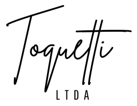
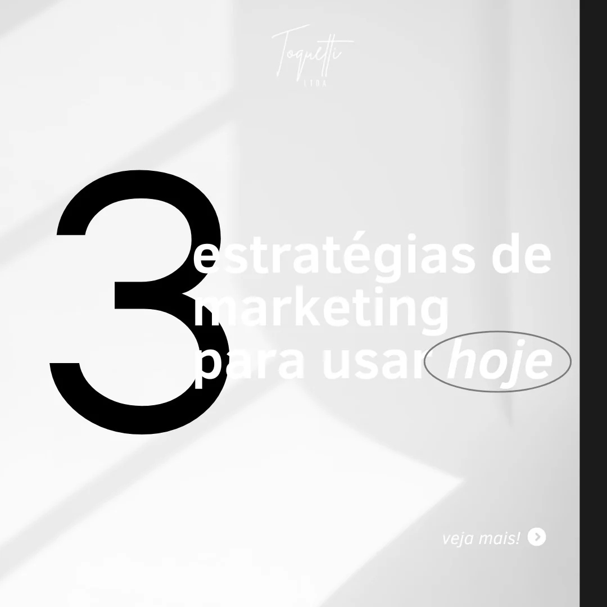
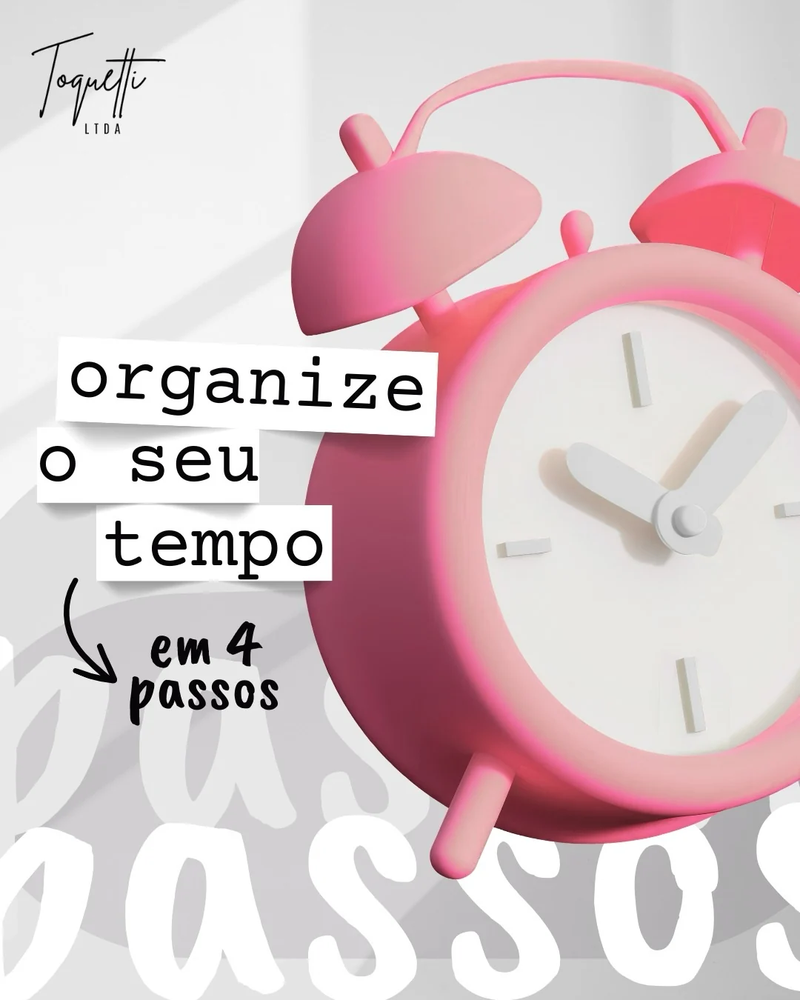
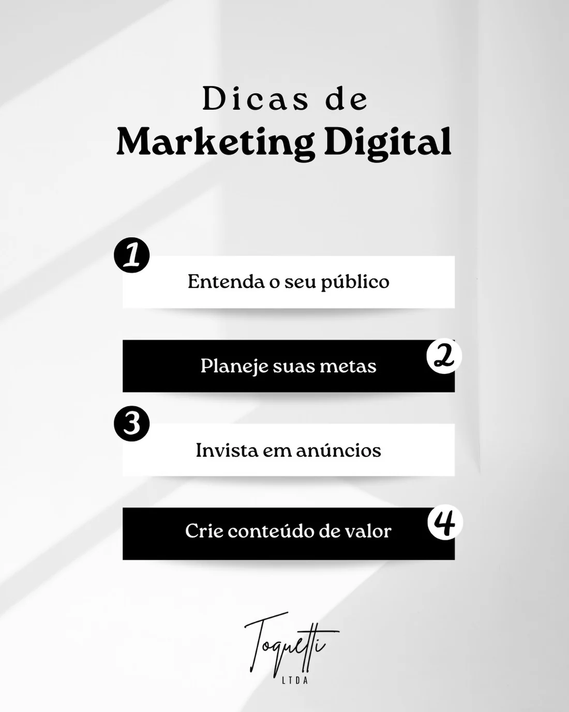
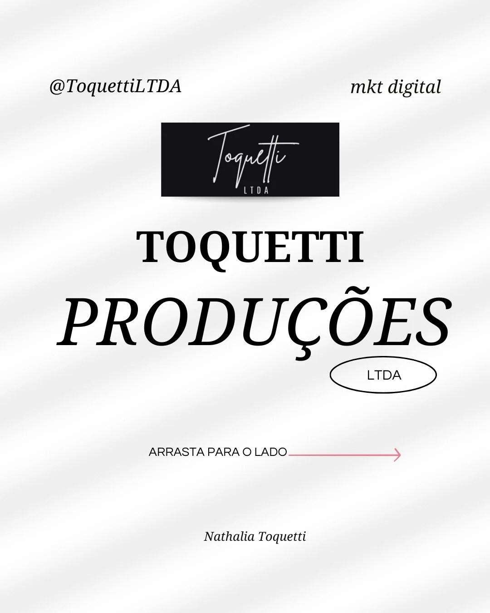
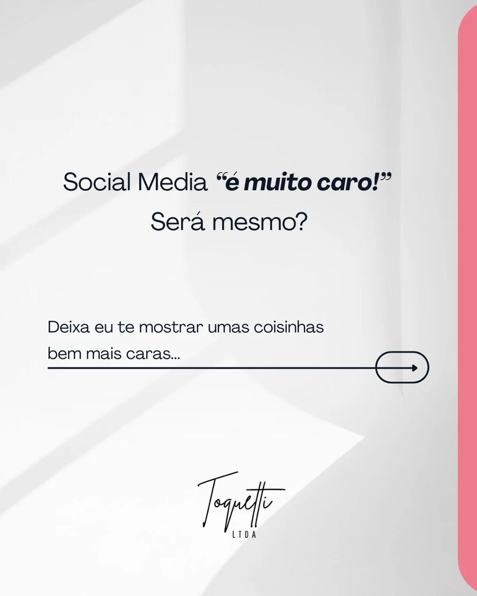

01
↗
Social Media
Planejamento e organização da presença nas redes para transformar rotina de posts em comunicação consistente.
ver conteúdos →
fale com a Toquetti Produções ↗Estratégia, conteúdo e performance para marcas que querem sair do “postar por postar” e construir presença digital com intenção.

Uma marca forte precisa de uma mensagem que faça sentido, conteúdo que tenha função e distribuição que chegue em quem importa.
É nessa interseção entre criatividade + estratégia + execução que a Toquetti Produções se posiciona.
explorar serviços →As frentes abaixo foram organizadas a partir dos temas e serviços que aparecem no conteúdo público da Toquetti Produções.
Planejamento e organização da presença nas redes para transformar rotina de posts em comunicação consistente.
ver conteúdos →Ideias, direção criativa e peças que informam, conectam e ajudam a marca a ser lembrada.
ver conteúdos →Campanhas orientadas por objetivo e dados para ampliar alcance e dar mais inteligência à distribuição.
entender o método →Criação de materiais e projetos digitais com atenção à identidade, clareza e acabamento visual.
conhecer a Toquetti Produções →para marcas que querem parar de improvisar
Um bom trabalho digital começa antes do conteúdo: com clareza sobre a mensagem, o público e o objetivo.
A partir daí, cada peça passa a ter um porquê — e a presença deixa de ser só presença.
Entender contexto, público, posicionamento e oportunidades.
Definir prioridades, mensagem e caminhos de conteúdo e distribuição.
Transformar estratégia em conteúdo, campanhas e presença consistente.
Observar sinais, aprender com os dados e ajustar o que precisa melhorar.




O feed revela uma marca que fala de marketing de forma direta, visual e prática — de gestão de redes a tráfego, de produtividade a conteúdo.
O site nasce com a mesma lógica: clareza, personalidade e movimento, sem perder o lado profissional.
sua marca não precisa de mais um post.
Vamos conversar sobre o que sua marca pode construir nas redes — com estratégia, conteúdo e execução.
falar com a Toquetti Produções ↗